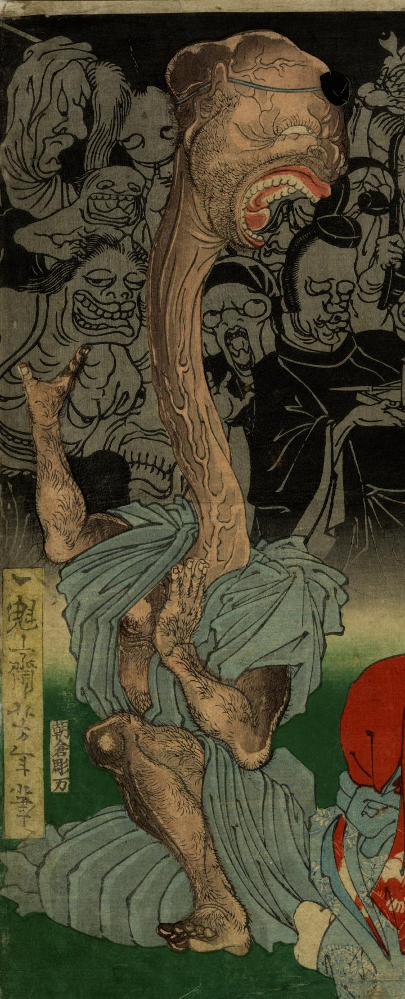

首の長い化物。男の山伏のようである。長い首や頭には筋がくっきりと浮かび上がっており、口を大きくあけて苦悶の表情をしている。立膝をつき、踊るように両手を挙げている。
著作者：一魁齋芳年／出典：親書誌：U426_nichibunken_0286：於吹島之館直之古狸退治図；フクシマ ノ ヤカタ ニオイテ ナオユキ コリ オ タイジ ル ズ／日付：2014／資源識別子：U426_nichibunken_0286_0002_0000
Copyright (c)2010- International Research Center for Japanese Studies, Kyoto, Japan. All rights reserved.